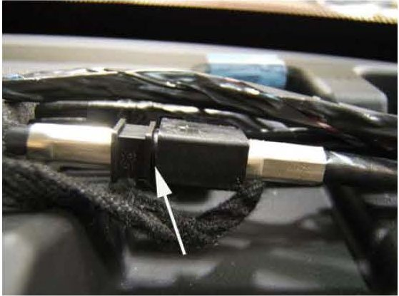

Audio System - Poor AM and FM Band Reception
TECHNICALBulletin No.: 06-08-44-033B
Date: August 25, 2008
Subject:
Radio - Poor AM and FM Reception (Inspect and Fully Seat Connector)
Models:
2007 Cadillac Escalade Models
2007 Chevrolet Avalanche, Silverado, Suburban, Tahoe
2007 GMC Sierra, Yukon Models
Supercede:
This bulletin is being revised to clarify the location of connector C213 for the Yukon Denali. Please discard Corporate Bulletin Number 06-08-44-033A (Section 08 - Body & Accessories).
Condition
Some customers may comment that the radio has poor AM and FM reception.
Cause
The radio antenna coax cable may not be fully seated at connector C213.
Correction
1. Remove the driver and passenger windshield pillar garnish molding (A-pillar trim) and disconnect the wiring harness.
2. Remove the instrument panel upper trim panel and disconnect the electrical connections.
3. Remove the foam tape surrounding the radio coax cable electrical connector C213. Connector C213 is located under the top left side of the instrument panel upper trim panel on all vehicles except the Cadillac Escalade EXT and the Chevrolet Avalanche. Connector C213 is located under the top right side of the instrument panel upper trim panel on the Cadillac Escalade EXT, Chevrolet Avalanche and GMC Yukon Denali.

4. Inspect connector C213 and manipulate coax as needed to ensure that the connector is fully seated (The above graphic shows the connector properly seated).
5. Install foam tape around connector C213.
6. If re-securing the connector does not correct the condition, refer to SI for further diagnosis and repair.
7. Install the instrument panel upper trim panel and electrical connections.
8. Install the driver's and passenger's windshield pillar garnish moldings (A pillar trim) and electrical connectors.
Warranty Information
For vehicles repaired under warranty, use the table above.

Disclaimer